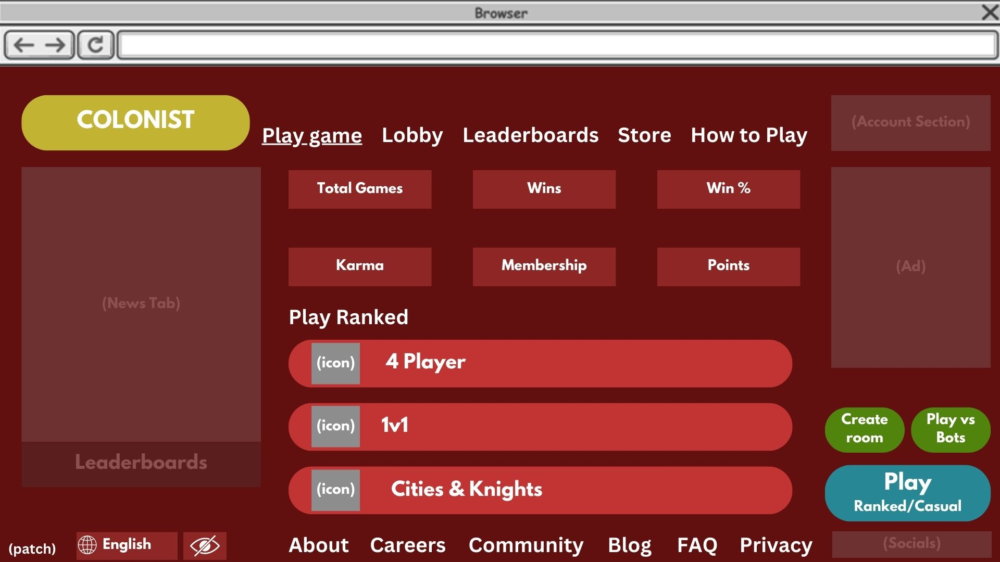

This picture shows the opening menu screen with a color scheme that fits the box design for Settlers of Catan. We also added a “How to Play” button and added symbols to help show visual accessibility options and language configurations.This is what the game screen would look like. We altered the rule book so it is easier to find and we added the visual accessibility option on the screen. Lastly the boxes were colored to allow for a person’s attention to focus on the action buttons first rather than the supplementary information in the side boxes.This image shows what the website will look like with the visual impaired option toggled. It tries to use colors sparingly and goes for high contrast colors. (The faded gray boxes are not the colors used, they’re just representations for where other information will go.)